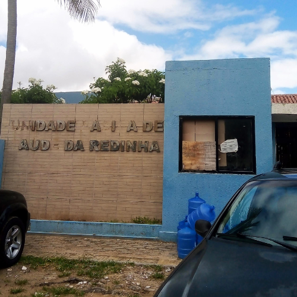
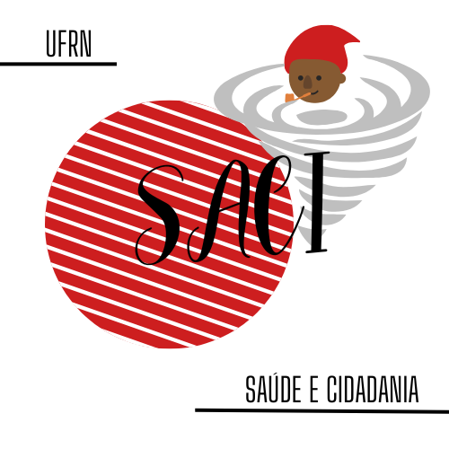
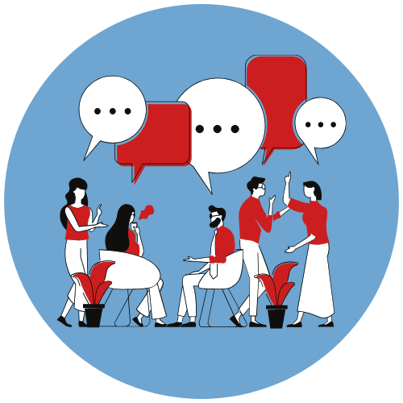
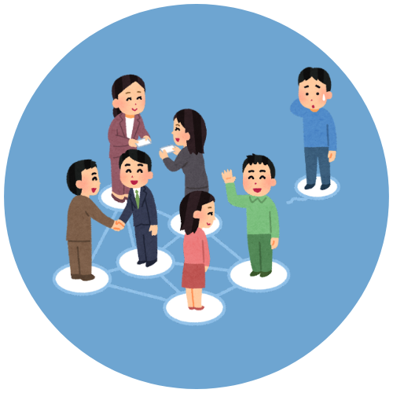
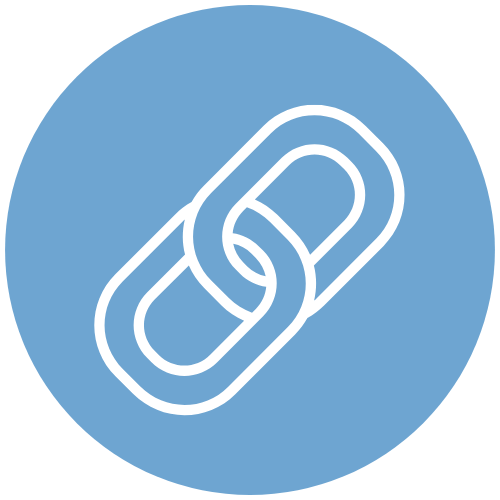

Meu nome é Camile Joice, tenho 20 anos e sou estudante do primeiro período de Enfermagem na Universidade Federal do Rio Grande do Norte (UFRN). Sou formada em Técnico em Informática pelo Instituto Federal do Rio Grande do Norte (IFRN) e por isso surgiu a ideia da criação do site como o portfólio do SACI I, disciplina "Saúde e Cidadania I", em que irei mostrar a vocês a experiência dessa disciplina. Bora?

Fonte (imagem): Autoria própria
Sobre o local:
UBS Redinha
A Unidade Básica de Saúde (UBS) Redinha é uma instituição de saúde pública que fica na capital do Rio Grande do Norte, Natal.
Localização
Fica na Rua do Campo, no bairro da Redinha, em Natal (bem próximo à praia da Redinha).
O que faremos?
O grupo escolhido para esta UBS vai atuar no âmbito voltado a comunidade da Redinha, fazendo visitas e propostas para melhoria da população local.
Fonte (imagem): Cássia Virgínia
Grupo para UBS Redinha
Você deve estar pensando: "Se Camile está no curso de Enfermagem, então o grupo todo é do mesmo curso", acertei? Não é bem assim, pois o grupo é formado por alunos de diferentes cursos, como Medicina, Nutrição, Arquitetura, Odontologia, entre outros. Então, a dinâmica entre todos os estudantes é bem divertida, porque há esse mix de conhecimentos e de pontos de vistas diferentes.

Fonte (imagem): Autoria própria
Mas, o que é o SACI?
O SACI é uma disciplina na UFRN, intitulada "Saúde e Cidadania", que visa integrar os estudantes da área da saúde, com práticas em campo, em diferentes comunidades. No Campus Central da instituição, localizado em Natal, envolve a atividade do SACI em diferentes bairros da capital, como: Redinha, Planalto, Mãe Luíza, entre outros.
Com a disciplina, conhecemos muito mais sobre as estruturas das escolas e UBSs, sobre a interação entre a própria comunidade, além de nos tirar da bolha de uma realidade perfeita e equalitária.
Aprendizados
Durante os encontros, aprendi muitas coisas envolvendo não só sobre o território de atuação do grupo, que é a Redinha, como também sobre fatores que a rodeiam. Conheça um pouquinho sobre o que construí de aprendizado durante os encontros da disciplina:

Interagir mais
Nós precisamos conversar entre o grupo e com a comunidade, então para isso é necessário usar o artifício da comunicação.
A Redinha é mais que uma praia
O bairro da Redinha é muito mais parecido com outros bairros de Natal, escasso de tantas coisas, mas com um valor próprio que pode ser lapidado.
Carência de poder público
Um lugar com tanto potencial, poderia ter muito mais investimento para valorizar a beleza dele e das suas estruturas.
Problemas mais comuns do que imaginamos
A cada visita, percebemos a existência de problemas comuns, como a falta de melhorias nas escolas e UBSs, falta de calçamento...

Sobre os projetos
A Redinha apresenta ótimos projetos de integração de crianças e jovens, que requer ainda investimentos para ampliação e melhorias.

Elo entre comunidade e território
Algo de extrema importância, pois a mobilização para as mudanças no próprio território parte do engajamento da comunidade.